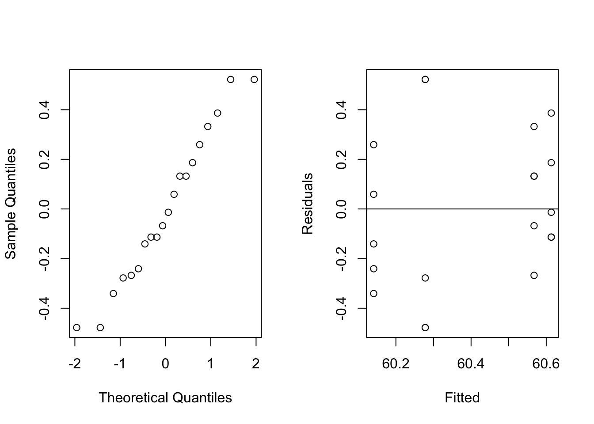

Code
library(conflicted)
library(lme4)Loading required package: MatrixCode
library(faraway)Random Intercept and Random Slope Models
March 12, 2026
This script demonstrates linear random effect models using the lme4 package.
Paper for lme4 package: https://cran.r-project.org/web/packages/lme4/vignettes/lmer.pdf
This example is from p.200, ch 10 of Faraway (2016) on random effect models. The dataset tests paper brightness depending on a shift operator:
bright operator
1 59.8 a
2 60.0 a
3 60.8 a
4 60.8 a
5 59.8 a
6 59.8 b
7 60.2 b
8 60.4 b
9 59.9 b
10 60.0 b
11 60.7 c
12 60.7 c
13 60.5 c
14 60.9 c
15 60.3 c
16 61.0 d
17 60.8 d
18 60.6 d
19 60.5 d
20 60.5 dUse REML estimate for var-cov component by default. Use MLE if you want:
mmod is an object of class lmerMod:
Linear mixed model fit by REML ['lmerMod']
Formula: bright ~ 1 + (1 | operator)
Data: pulp
REML criterion at convergence: 18.6
Scaled residuals:
Min 1Q Median 3Q Max
-1.4666 -0.7595 -0.1244 0.6281 1.6012
Random effects:
Groups Name Variance Std.Dev.
operator (Intercept) 0.06808 0.2609
Residual 0.10625 0.3260
Number of obs: 20, groups: operator, 4
Fixed effects:
Estimate Std. Error t value
(Intercept) 60.4000 0.1494 404.2Linear mixed model fit by maximum likelihood ['lmerMod']
Formula: bright ~ 1 + (1 | operator)
Data: pulp
AIC BIC logLik -2*log(L) df.resid
22.5 25.5 -8.3 16.5 17
Scaled residuals:
Min 1Q Median 3Q Max
-1.50554 -0.78116 -0.06353 0.65850 1.56232
Random effects:
Groups Name Variance Std.Dev.
operator (Intercept) 0.04575 0.2139
Residual 0.10625 0.3260
Number of obs: 20, groups: operator, 4
Fixed effects:
Estimate Std. Error t value
(Intercept) 60.4000 0.1294 466.7Note that lmer doesn’t report p-values for their estimates. The between subject SD 0.21 of the MLE method is smaller than the between subject SD 0.26 of the REML method because MLE tends to bias the estimates towards zero.
The fixed effect estimates of the two methods happen to be the same, but they should generally differ.
One can also estimate the random effects, which are the posterior means (or modes):
This gives the variance-covariance for the fixed effects, same as 0.1494^2. Section 5.1 in lme4’s JSS paper gives more details on how this is computed.
Residual standard error (estimated standard deviation for the epsilon errors).
This reports the estimated random effect std dev and the error std dev.
Fixed effect coefficient, etc.
Hand-computed fixed effect estimate:
1 x 1 Matrix of class "dgeMatrix"
[,1]
[1,] 60.4Hand-computed standard error for fixed effect (the usual covariance matrix for the GLS (general least square) estimate):
These numbers check out with ones reported in summary(mmod)$coeff.
One can also plot the residuals as model diagnostics. The default residuals are computed using the estimated random effects. This means these residuals can be regarded as estimates of epsilons which is usually what we want:

null device
1 Compute the residual by hand:
They check out with the residual reported:
From longitudinal data chapter (Ch 11) of Faraway 2016:
age educ sex income year person
1 31 12 M 6000 68 1
2 31 12 M 5300 69 1
3 31 12 M 5200 70 1
4 31 12 M 6900 71 1
5 31 12 M 7500 72 1
6 31 12 M 8000 73 1
7 31 12 M 8000 74 1
8 31 12 M 9600 75 1
9 31 12 M 9000 76 1
10 31 12 M 9000 77 1
11 31 12 M 23000 78 1
12 31 12 M 22000 79 1
13 31 12 M 8000 80 1
14 31 12 M 10000 81 1
15 31 12 M 21800 82 1
16 31 12 M 19000 83 1
24 29 16 M 7500 68 2
25 29 16 M 7300 69 2
26 29 16 M 9250 70 2
27 29 16 M 10300 71 2As explained by Faraway, the year is centered at the year 1978 so that the intercept will predict the log income in 1978, but not 1900!
Linear mixed model fit by REML ['lmerMod']
Formula: log(income) ~ cyear * sex + age + educ + (cyear | person)
Data: psid
REML criterion at convergence: 3819.8
Scaled residuals:
Min 1Q Median 3Q Max
-10.2310 -0.2134 0.0795 0.4147 2.8254
Random effects:
Groups Name Variance Std.Dev. Corr
person (Intercept) 0.2817 0.53071
cyear 0.0024 0.04899 0.19
Residual 0.4673 0.68357
Number of obs: 1661, groups: person, 85
Fixed effects:
Estimate Std. Error t value
(Intercept) 6.674211 0.543323 12.284
cyear 0.085312 0.008999 9.480
sexM 1.150312 0.121292 9.484
age 0.010932 0.013524 0.808
educ 0.104209 0.021437 4.861
cyear:sexM -0.026306 0.012238 -2.150
Correlation of Fixed Effects:
(Intr) cyear sexM age educ
cyear 0.020
sexM -0.104 -0.098
age -0.874 0.002 -0.026
educ -0.597 0.000 0.008 0.167
cyear:sexM -0.003 -0.735 0.156 -0.010 -0.0116 x 6 Matrix of class "dpoMatrix"
(Intercept) cyear sexM age
(Intercept) 2.952003e-01 9.887065e-05 -6.841728e-03 -6.419660e-03
cyear 9.887065e-05 8.099019e-05 -1.075138e-04 2.572365e-07
sexM -6.841728e-03 -1.075138e-04 1.471185e-02 -4.311368e-05
age -6.419660e-03 2.572365e-07 -4.311368e-05 1.828907e-04
educ -6.954571e-03 2.976876e-08 2.136982e-05 4.831984e-05
cyear:sexM -2.023534e-05 -8.099199e-05 2.313032e-04 -1.681985e-06
educ cyear:sexM
(Intercept) -6.954571e-03 -2.023534e-05
cyear 2.976876e-08 -8.099199e-05
sexM 2.136982e-05 2.313032e-04
age 4.831984e-05 -1.681985e-06
educ 4.595265e-04 -2.838170e-06
cyear:sexM -2.838170e-06 1.497587e-04This time REML and MLE give different fixed effect estimates:
(Intercept) cyear sexM age educ cyear:sexM
6.67421086 0.08531199 1.15031250 0.01093183 0.10420917 -0.02630635 (Intercept) cyear sexM age educ cyear:sexM
6.67595021 0.08522662 1.14996968 0.01092534 0.10412700 -0.02617360 (Intercept) cyear sexM age educ cyear:sexM
0.543323402 0.008999455 0.121292411 0.013523710 0.021436569 0.012237594 Groups Name Std.Dev. Corr
person (Intercept) 0.530713
cyear 0.048988 0.187
Residual 0.683574 There is a random effect for both intercept and slope, and hence a correlation between them.